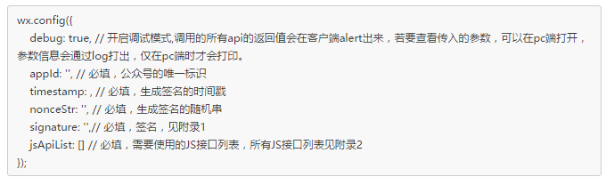
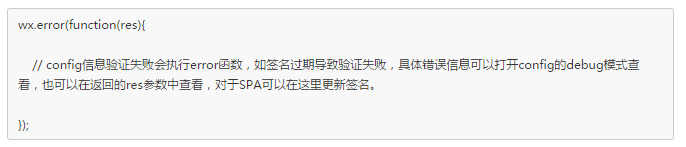
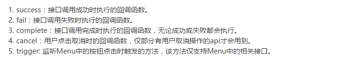

分享人：李绍博
目录
1.背景介绍
2.知识剖析
3.常见问题
4.解决方案
5.编码实战
6.扩展思考
7.参考文献
8.更多讨论
微信是由腾讯公司开发的一款手机APP社交软件，也是中国目前来说最为常见的社交软件，使用量之多可以近乎覆盖所有拥有智能手机的用户。由于清晰明了的界面和简单的操作成为了智能手机用户的必备软件
微信JS-SDK是微信公众平台面向网页开发者提供的基于微信内的网页开发工具包
通过使用微信JS-SDK，网页开发者可借助微信高效地使用拍照、选图、语音、位置等手机系统的能力，同时可以直接使用微信分享、扫一扫等微信特有的能力，为微信用户提供更优质的网页体验。
微信JSSDK使用步骤
1、公众号设置JS安全接口：
登录公众号后，在设置-公众号设置-功能设置-JS接口安全域名中设置调用接口的域名
2、HTML中引入JS文件：
ps:(如使用https协议，则引用https开头的JS
如需使用摇一摇周边功能，请引入 jweixin-1.1.0.js):
3、通过config接口注入权限验证配置:
所有需要使用JS-SDK的页面必须先注入配置信息，否则将无法调用（同一个url仅需调用一次,对于变化url的SPA的web app可在每次url变化时进行调用)
4、接口处理验证
成功验证
失败验证
所有JS接口列表：(通过wx.或者jWeixin.调用)
++++++++++基础接口++++++++++++++++
checkJsApi //判断当前客户端版本是否支持指定JS接口
++++++++++分享接口+++++++++++
onMenuShareTimeline //获取“分享到朋友圈”按钮点击状态及自定义分享内容接口
onMenuShareAppMessage //获取“分享给朋友”按钮点击状态及自定义分享内容接口
onMenuShareQQ //获取“分享到QQ”按钮点击状态及自定义分享内容接口
onMenuShareWeibo //获取“分享到腾讯微博”按钮点击状态及自定义分享内容接口
onMenuShareQZone //获取“分享到QQ空间”按钮点击状态及自定义分享内容接口
++++++音频接口+++++++++++++++
startRecord //开始录音接口
stopRecord //停止录音接口
onVoiceRecordEnd //监听录音自动停止接口
playVoice //播放语音接口
pauseVoice //暂停播放接口
stopVoice //暂停播放接口
onVoicePlayEnd //监听语音播放完毕接口
uploadVoice //上传语音接口
downloadVoice //下载语音接口
++++++++++++图像接口++++++++++++
chooseImage //拍照或从手机相册中选图接口
previewImage //预览图片接口
uploadImage //上传图片接口
downloadImage //下载图片接口
+++++++++++++智能接口++++++++++++++++++
translateVoice //识别音频并返回识别结果接口
+++++++++++++设备信息++++++++++++++++++
getNetworkType //获取网络状态接口
openLocation //使用微信内置地图查看位置接口
getLocation //获取地理位置接口
++++++++++++界面操作++++++++++++++++++++
hideOptionMenu //隐藏右上角菜单接口
showOptionMenu //显示右上角菜单接口
hideMenuItems //批量隐藏功能按钮接口
showMenuItems //批量显示功能按钮接口
hideAllNonBaseMenuItem //隐藏所有非基础按钮接口
showAllNonBaseMenuItem //显示所有功能按钮接口
closeWindow //关闭当前网页窗口接口
scanQRCode //调起微信扫一扫接口
++++++++++++微信支付++++++++++++++
chooseWXPay /发起一个微信支付请求
++++++++++微信小店+++++++++++
openProductSpecificView //跳转微信商品页接口
+++++++++++微信卡券++++++++++
addCard //批量添加卡券接口
chooseCard //拉取适用卡券列表并获取用户选择信息
openCard //查看微信卡包中的卡券接口
接口调用说明:
所有接口通过wx对象(也可使用jWeixin对象)来调用，参数是一个对象，除了每个接口本身需要传的参数之外，还有以下通用参数：
以上几个函数都带有一个参数，类型为对象，其中除了每个接口本身返回的数据之外，还有一个通用属性errMsg，其值格式如下：
调用成功时："xxx:ok" ，其中xxx为调用的接口名
用户取消时："xxx:cancel"，其中xxx为调用的接口名
调用失败时：其值为具体错误信息
1、如何通过config接口注入权限验证配置？
2、如何在JS文件中调用API？
1、如何通过config接口注入权限验证配置？
wx.config({
debug: true, // 开启调试模式,调用的所有api的返回值会在客户端alert出来，若要查看传入的参数，可以在pc端打开，参数信息会通过log打出，仅在pc端时才会打印。
appId: '', // 必填，公众号的唯一标识
timestamp: , // 必填，生成签名的时间戳
nonceStr: '', // 必填，生成签名的随机串
signature: '',// 必填，签名，（根据AppID和AppSecret获取access_token-用access_token获取jsapi_ticket，用算法生成签名）
jsApiList: [] // 必填，需要使用的JS接口列表
});使用微信JSSDK最为重要的一步，需要在这里拿到页面的签名才有调用接口的权限，其中jsApiList中需列出所有用的的接口
注意：这里的参数信息应该在后端操作完成后，返回给前端使用，直接在前段操作数据非常不安全！！！
2、如何在JS文件中调用API？
所有的api都封装在一个对象里(wx或jWeixin)，通过调用该对象的方法即可，如调用分享到朋友圈接口：
wx.onMenuShareTimeline({
title: '', // 分享标题
link: '', // 分享链接
imgUrl: '', // 分享图标
success: function () {
// 用户确认分享后执行的回调函数
},
cancel: function () {
// 用户取消分享后执行的回调函数
}
});官方提供的JSSDK DEMO (html部分比较简单，主要是js部分)：
配置权限以及需要调用的接口：
wx.config({
debug: false,
appId: 'wxf8b4f85f3a794e77',
timestamp: 1421142450,
nonceStr: '9hKgyCLgGZOgQmEI',
signature: 'bf7a5555f9ad0e7e491535f232349a40510a6f8f',
jsApiList: [
'checkJsApi',
'onMenuShareTimeline',
'chooseImage',
'previewImage',
'uploadImage',
'downloadImage',
'getLocation',]
})
接口的调用(这里调用分享朋友圈、图片选择、拍照上传、下载、地理位置获取等接口)：
wx.ready(function () {
// 1 判断当前版本是否支持指定 JS 接口，支持批量判断
document.querySelector('#checkJsApi').onclick = function () {
wx.checkJsApi({
jsApiList: [
'getNetworkType',
'previewImage'
],
success: function (res) {
alert(JSON.stringify(res));
}
});
};
// 2.2 监听“分享到朋友圈”按钮点击、自定义分享内容及分享结果接口
document.querySelector('#onMenuShareTimeline').onclick = function () {
wx.onMenuShareTimeline({
title: '互联网之子',
link: 'http://movie.douban.com/subject/25785114/',
imgUrl: 'http://img3.douban.com/view/movie_poster_cover/spst/public/p2166127561.jpg',
trigger: function (res) {
alert('用户点击分享到朋友圈');
},
success: function (res) {
alert('已分享');
},
cancel: function (res) {
alert('已取消');
},
fail: function (res) {
alert(JSON.stringify(res));
}
});
alert('已注册获取“分享到朋友圈”状态事件');
};
// 5 图片接口
// 5.1 拍照、本地选图
var images = {
localId: [],
serverId: []
};
document.querySelector('#chooseImage').onclick = function () {
wx.chooseImage({
success: function (res) {
images.localId = res.localIds;
alert('已选择 ' + res.localIds.length + ' 张图片');
}
});
};
// 5.2 图片预览
document.querySelector('#previewImage').onclick = function () {
wx.previewImage({
current: 'http://img5.douban.com/view/photo/photo/public/p1353993776.jpg',
urls: [
'http://img3.douban.com/view/photo/photo/public/p2152117150.jpg',
'http://img5.douban.com/view/photo/photo/public/p1353993776.jpg',
'http://img3.douban.com/view/photo/photo/public/p2152134700.jpg'
]
});
};
// 5.3 上传图片
document.querySelector('#uploadImage').onclick = function () {
if (images.localId.length == 0) {
alert('请先使用 chooseImage 接口选择图片');
return;
}
var i = 0, length = images.localId.length;
images.serverId = [];
function upload() {
wx.uploadImage({
localId: images.localId[i],
success: function (res) {
i++;
alert('已上传：' + i + '/' + length);
images.serverId.push(res.serverId);
if (i < length) {
upload();
}
},
fail: function (res) {
alert(JSON.stringify(res));
}
});
}
upload();
};
// 5.4 下载图片
document.querySelector('#downloadImage').onclick = function () {
if (images.serverId.length === 0) {
alert('请先使用 uploadImage 上传图片');
return;
}
var i = 0, length = images.serverId.length;
images.localId = [];
function download() {
wx.downloadImage({
serverId: images.serverId[i],
success: function (res) {
i++;
alert('已下载：' + i + '/' + length);
images.localId.push(res.localId);
if (i < length) {
download();
}
}
});
}
download();
};
// 7 地理位置接口
// 7.1 查看地理位置
document.querySelector('#openLocation').onclick = function () {
wx.openLocation({
latitude: 23.099994,
longitude: 113.324520,
name: 'TIT 创意园',
address: '广州市海珠区新港中路 397 号',
scale: 14,
infoUrl: 'http://weixin.qq.com'
});
};
// 7.2 获取当前地理位置
document.querySelector('#getLocation').onclick = function () {
wx.getLocation({
success: function (res) {
alert(JSON.stringify(res));
},
cancel: function (res) {
alert('用户拒绝授权获取地理位置');
}
});
};编码实战中使用微信JSSDK时可能会遇到什么问题？
1、用户授权问题：
涉及到用户的个人隐私，所以，在调用接口获取用户数据时，需要用户提供授权，只有授权通过时才可以成功获得用户信息。
2、获取用户地理位置信息？
除了需要用户授权之外，通过接口获取的用户信息并不是地址信息，而是地理的经纬信息，若需要拿到具体的地址，还得用经纬信息通过腾讯地图API或百度地图API等来获取详细地址。
具体地址的转换(腾讯地图为例，需引入qqmap.js文件，网络应用：http://map.qq.com/api/js?v=2.exp)：如
wx.ready(function () {//获取详细经纬度后反查腾讯地图得到确切地址
wx.getLocation({
type: 'wgs84',
success: function (res) {
// 地址解析:http://lbs.qq.com/javascript_v2/guide-service.html#link-four
let geocoder = new qq.maps.Geocoder({
complete: function (result) {
resolve(result.detail.address)
}
})
var coord = new qq.maps.LatLng(res.latitude, res.longitude)
geocoder.getAddress(coord)
}
})
})
//正则匹配已开通服务城市，匹配成功跳到具体城市
wx.getLocation().then(function (res) {
for (let i in self.cities) {
let city = self.cities[i]
if (city.parent === 0) {
continue
}
let patt = new RegExp(city.name)
if (patt.test(res)) {
self.city = [city.parent, city.value]
return
}
}
})
使用百度地图可能会由误差，需进行转化经纬数据在调用百度mapAPI
参考一：微信JSSDK文档
参考二：微信JSSDK DEMO
前端是否能完成权限配置？
不考虑安全问题，应该是可以的，非常不推荐
第一步 获取access_token
第二步 获取jsapi_ticket
第三步 参数名排序和拼接字符串，并加密（sha1）
其思想可以参考后端java代码，前两部异步请求（不能用jsonp，返回格式不对，可配置nginx跨域）
public static String SHA1(String decript) {//sha1加密算法
try {
MessageDigest digest = java.security.MessageDigest.getInstance("SHA-1");
digest.update(decript.getBytes());
byte messageDigest[] = digest.digest();
// Create Hex String
StringBuffer hexString = new StringBuffer();
// 字节数组转换为 十六进制 数
for (int i = 0; i < messageDigest.length; i++) {
String shaHex = Integer.toHexString(messageDigest[i] & 0xFF);
if (shaHex.length() < 2) {
hexString.append(0);
}
hexString.append(shaHex);
}
return hexString.toString();
} catch (NoSuchAlgorithmException e) {
e.printStackTrace();
}
return "";
}
/////////////////////获取签名
public static void main(String[] args) {
//1、获取AccessToken
String accessToken = getAccessToken();
//2、获取Ticket
String jsapi_ticket = getTicket(accessToken);
//3、时间戳和随机字符串
String noncestr = UUID.randomUUID().toString().replace("-", "").substring(0, 16);//随机字符串
String timestamp = String.valueOf(System.currentTimeMillis() / 1000);//时间戳
System.out.println("accessToken:"+accessToken+"\njsapi_ticket:"+jsapi_ticket+"\n时间戳："+timestamp+"\n随机字符串："+noncestr);
//4、获取url
String url="http://www.luiyang.com/add.html";
/*根据JSSDK上面的规则进行计算，这里比较简单，我就手动写啦
String[] ArrTmp = {"jsapi_ticket","timestamp","nonce","url"};
Arrays.sort(ArrTmp);
StringBuffer sf = new StringBuffer();
for(int i=0;i<'ArrTmp.length';i++){
sf.append(ArrTmp[i]);
}
*/
//5、将参数排序并拼接字符串
String str = "jsapi_ticket="+jsapi_ticket+"&noncestr="+noncestr+"×tamp="+timestamp+"&url="+url;
//6、将字符串进行sha1加密
String signature =SHA1(str);
System.out.println("参数："+str+"\n签名："+signature);
}
感谢大家观看
BY :李绍博